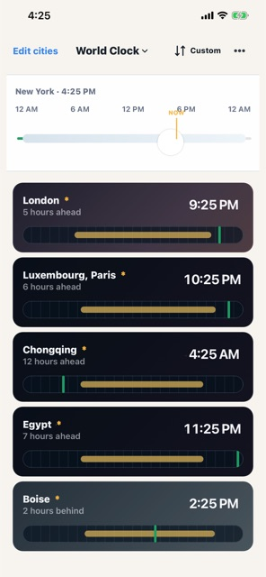
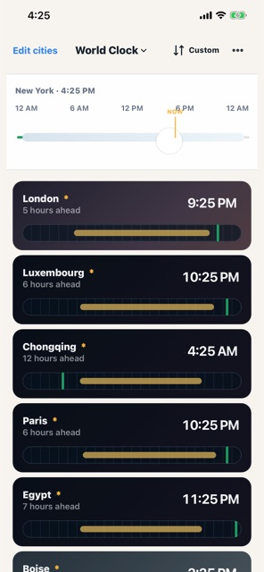
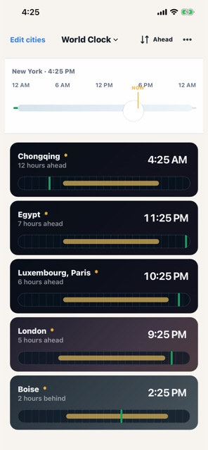
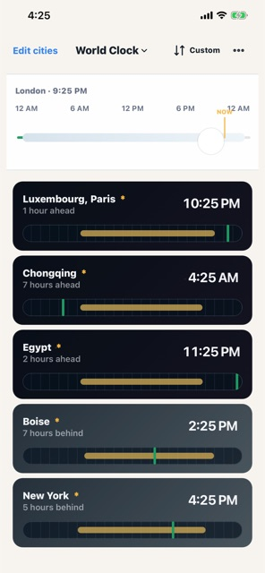
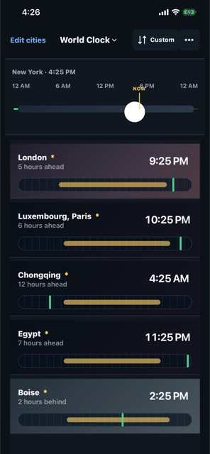

What time is it for them?
Every world clock app can tell you the time in Tokyo. Almost none help you answer the question you actually have: when can we both talk? Time Here, Time There is built around one shared timeline — drag it and every city moves together.

Mental time-zone math is the actual problem.
Knowing it is 9:16 PM in London does not tell you whether London is awake, or what 9:00 AM your time means for someone in Chongqing. The arithmetic is easy and the working memory is not — especially across a group.
So the app is organised around a single scrubber. Move it and every city's local time follows in step, with a daylight band behind each row, so the answer is something you look at rather than something you calculate.
One shared timeline
Daylight bands per city
iOS + web, offline
None
Features
Drag the timeline across yesterday, today, and tomorrow. Every city moves together.
Each row shades its daytime and labels it — morning, work hours, evening, sleeping hours.
Real solar times per city, so "evening" means something concrete.
Cities sharing an offset collapse into one row. Eight cities need not mean eight identical clocks.
Pick a home city and every offset recalculates against it.
A–Z, furthest ahead, furthest behind, or your own dragged order.
Tap any city's time, or the NOW marker, to snap straight back to live.
An iOS widget showing home time next to one tracked city.
No account, no ads, no analytics. The app makes zero network requests.
Screenshots
Captured from the iOS build at App Store resolution.
Shared timeline. The scrubber sits at NOW; every row shows its local time and daylight band.

Grouping off. Every city gets its own row when you would rather see them separately.

Quick sort. One control cycles between your own order, A–Z, and by offset.

Any city as home. With London as home, New York reads five hours behind.

Dark mode. Rows tint by local time of day — light at midday, deep navy at night.
Status
The web app is live and the iOS build is complete — distribution-signed, widget included, submitted for review. It is not on the App Store yet.
Android is planned but not started. The app is a web core wrapped for iOS with Capacitor, so the same bundle should carry over.